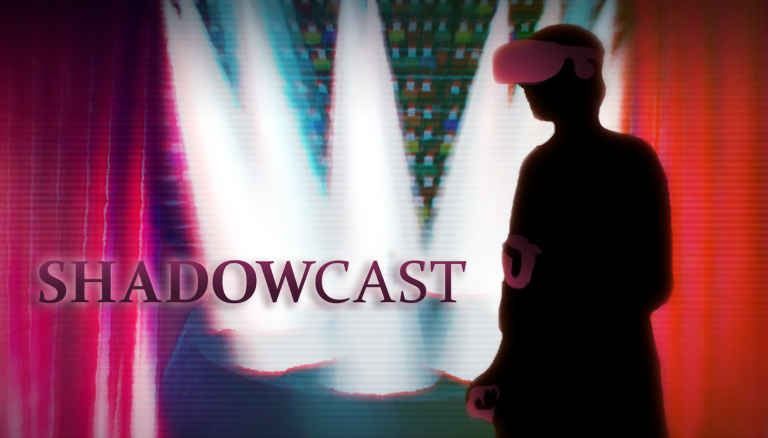
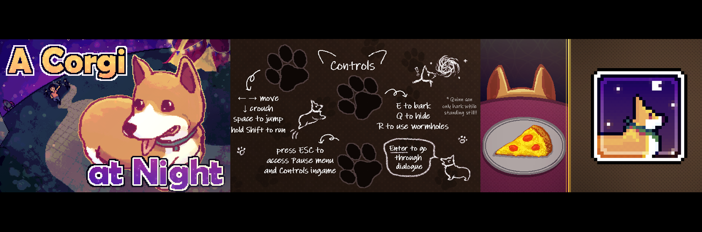
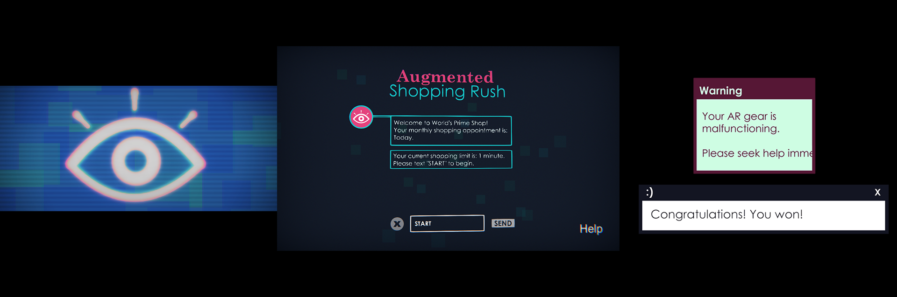
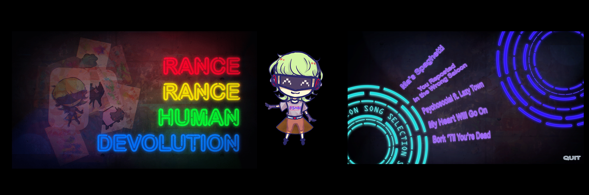
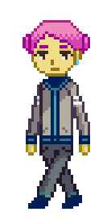
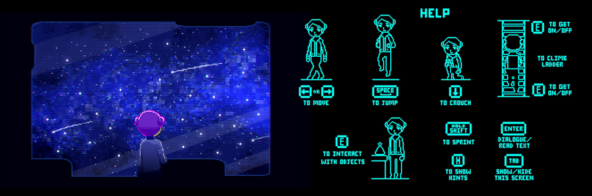

2D Art & UI
Below are the games I have worked outside of my classes with small teams. Recent to oldest release order.
Click project titles to view their websites and see more details.
Bombs Away
- 3D airship station management game project for UCI Computer Game Science Capstone class. (Unity Engine)
- Key role: Art direction, 2D art assets, UI design/implementation, shaders


ShadowCast
- Mixed reality musical theater karaoke spectacle. (VR, Unity Engine)
- Key role: UI art, graphic design (logo, promotional materials)

Production process with this project has been with 15-20 people in Agile environment. Aside from key work I’ve done, I helped a lot with the initial development and research on art style and graphics for the project.
A Corgi at Night
- A 2D platformer game about a lost corgi trying to get back to its owners.
- Key role: Opening cutscene, UI design, various art assets

Augmented Shopping Rush
- A quick 3D physics game done for Ludum Dare 42 gamejam. Theme: "Running out of Space". Done in 72 hours with a partner. (Unity Engine)
- Key role: Main Menu UI design and implementation, 2D art assets, scripting

Gameplay

Rance Rance Human Devolution
- Parody dancing game. (Unity Engine)
- Key role: UI, character, and art design

Xylo
- A 2D sci-fi horror game about a crashed ship crew. (Unity Engine)
- Key role: character designer, artist for additional prop assets

